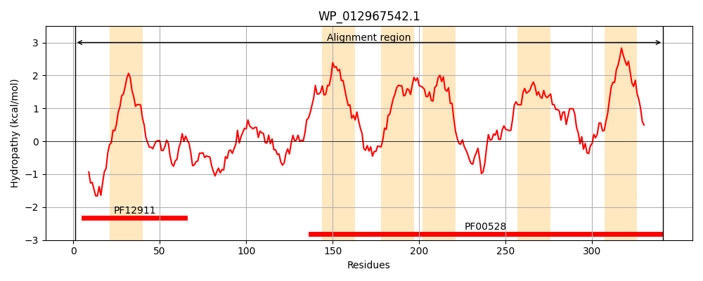
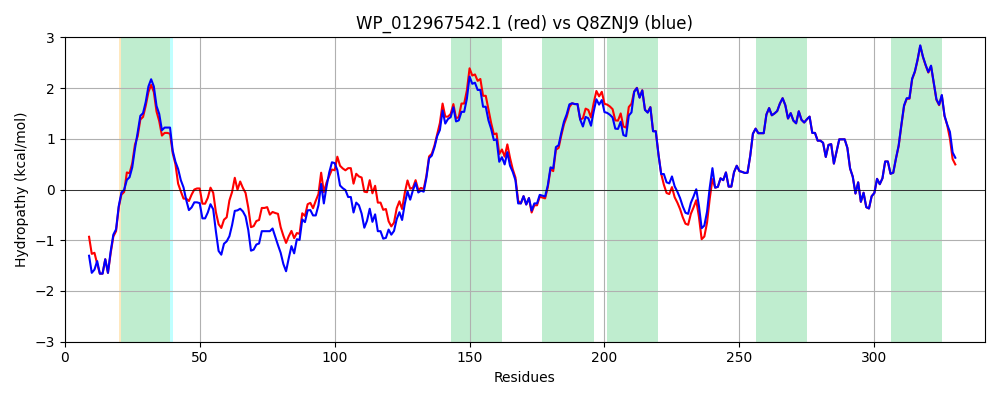

Hit Accession: Q8ZNJ9
Hit TCID: 3.A.1.5.24
Hit Description: gnl|BL_ORD_ID|17126 gnl|TC-DB|Q8ZNJ9|3.A.1.5.24 Putative ABC-type dipeptide/oligopeptide/nickel transport systems, permease component - Salmonella typhimurium.
Mach Len: 341
e:0.000000
Query TMS Count : 6
Hit TMS Count: 6
TMS-Overlap Score: 5.950000
Predicted Substrates:CHEBI:7990;peptide
BLAST Alignment:
Score: 1557 , Bit scores: 604 bits, E-value: 0.0e+00, Alignment length: 341, Percentage identity: 85
Query: 1 MSFFSPVNQARWARFRHNRRGYWSLWLFLILFFCSLGAELLANDRPLLVQYRGQLYVPVLKNYTEQTFGGAFATAADYQDPWLQHQLSTHGWALWPPVRFGATTINFASTVPFPSPPSASNWLGTDANGGDVLARILYGTRISVLFGLLLTLFSSVLGVLAGAIQGYYGGKIDLWGQRFIEVWSGMPTLFLIILLSSVVQPGFWWLLAITVLFGWMTLVGVVRAEFLRTRNYDYIRAAQALGVSDRQIILRHMLPNAMVATLTFLPFILCSSITTLTSLDFLGFGLPLGSPSLGELLLQGKNNLQAPWLGIAAFLSVAVLLTLLIFIGEAVRDAFDPSKAV 341
M SPVNQARWARFRHNRRGYWSLW+FL++F SL AEL+AND+PLLV+Y GQ Y P++KNY+E+ FGG AT ADYQDPWLQ QL GW LW PVRF A TINFA+T PFPSPPSA NWLGTDANGGDV ARILYGTRIS+LFGL+LT+ SSV+GVLAGA+QGYYGGK+DLWGQR IEVWSGMPTLFLIILLSSVVQP FWWLLAITVLFGWM+LVGVVRAEFLRTRN+DYIRAAQALGVSDR IILRHMLPNAMVATLTFLPFILCSSITTLTSLDFLGFGLPLGSPSLGELLLQGKNNLQAPWLGIAAFLSVA+LL+LLIFIGEAVRDAFDP+KAV
Sbjct: 1 MPRLSPVNQARWARFRHNRRGYWSLWIFLVVFSLSLCAELIANDKPLLVRYEGQWYFPLVKNYSERDFGGPLATTADYQDPWLQRQLENRGWVLWAPVRFSANTINFATTQPFPSPPSAKNWLGTDANGGDVFARILYGTRISILFGLMLTICSSVMGVLAGALQGYYGGKVDLWGQRLIEVWSGMPTLFLIILLSSVVQPNFWWLLAITVLFGWMSLVGVVRAEFLRTRNFDYIRAAQALGVSDRDIILRHMLPNAMVATLTFLPFILCSSITTLTSLDFLGFGLPLGSPSLGELLLQGKNNLQAPWLGIAAFLSVAILLSLLIFIGEAVRDAFDPAKAV 341 | Protein Hydropathy Plots: |
|---|
|  |  |
Pairwise Alignment-Hydropathy Plot:
|
|---|
|  |